For faceless & AI-avatar YouTubers
Plan every video. Make Pinterest pins in bulk.
The Faceless Creator Kit is a browser app with two tools: a Channel Planner that takes each video from idea to published, and a Pin Factory that turns a spreadsheet into Pinterest pins plus a ready-to-upload CSV.
One-time payment · No account · Your data stays on your device · Works offline
- Channel Planner
- Pin Factory
- 8 pin templates
- Bulk CSV export
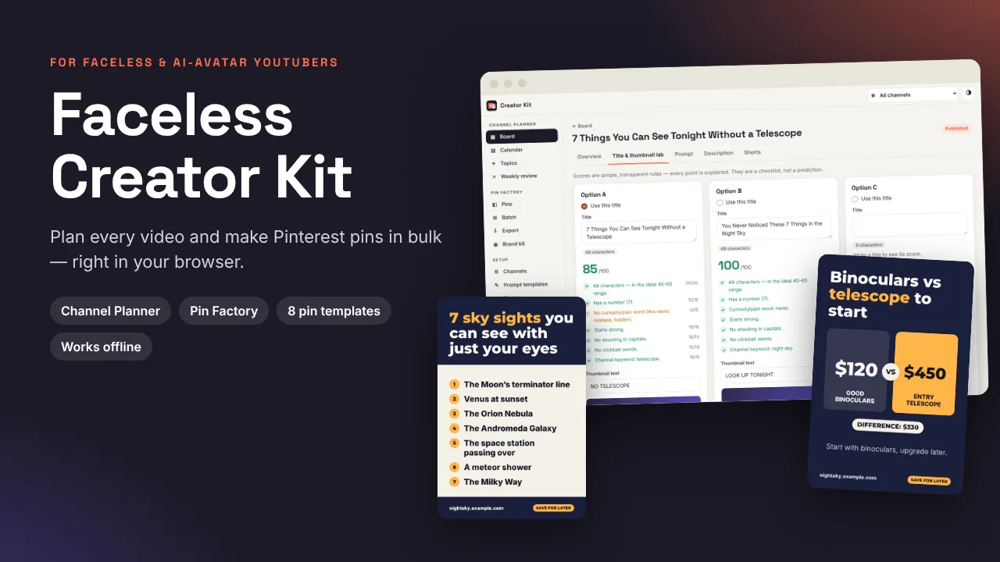
Running a faceless channel means a lot of small, repeated jobs
Before
- Video ideas in one app, scripts in another, titles in a sticky note.
- Rewriting the same AI script prompt from scratch for every video.
- Guessing between three titles at midnight.
- Designing Pinterest pins one by one, then a CSV that Pinterest rejects.
With the kit
- One board for every video and every channel, from idea to published.
- Prompt templates you fill in, then copy into the AI tool you already use.
- Titles scored with simple rules, and every point explained.
- A spreadsheet becomes a batch of branded pins and a checked bulk-upload CSV.
Two tools in one app
Real screenshots from the app, using the built-in demo channel.
Channel Planner
- Board for every video: Idea → Script → Voice/Avatar → Edit → Thumbnail → Scheduled → Published. As many channels as you like.
- Prompt builder with three templates (listicle explainer, story/insider reveal, how-to). Edit them or add your own.
- Description builder: hook, product links, chapters checked against YouTube's chapter rules, disclaimer and hashtags.
- Title & thumbnail lab: compare three titles, each scored out of 100 with the reasons shown.
- Shorts planner, calendar, topics bank with a "you already made this" warning, and a weekly review with small trend lines.
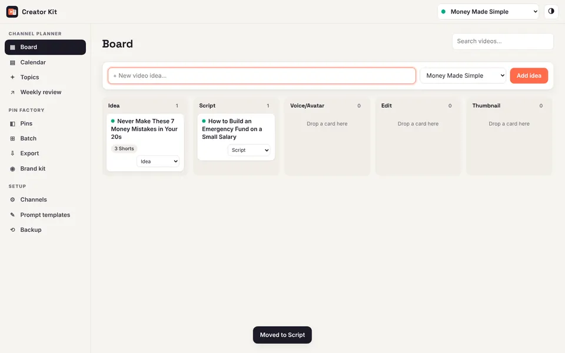
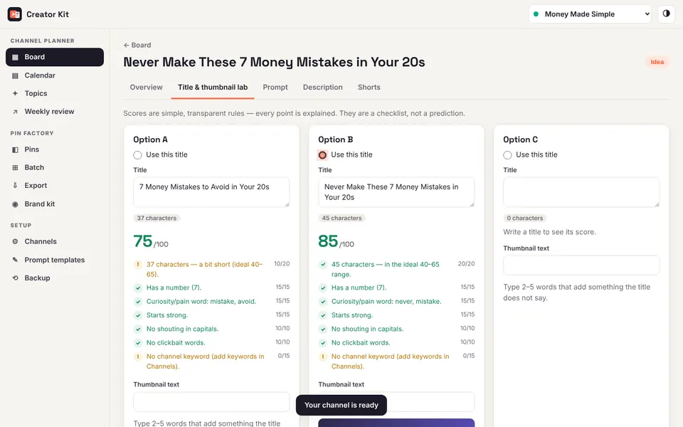
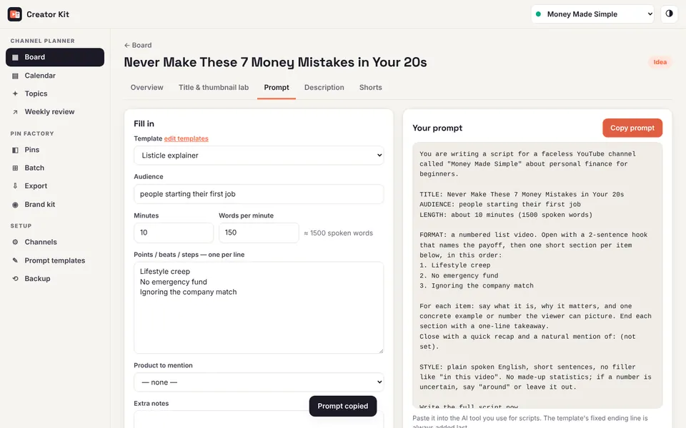
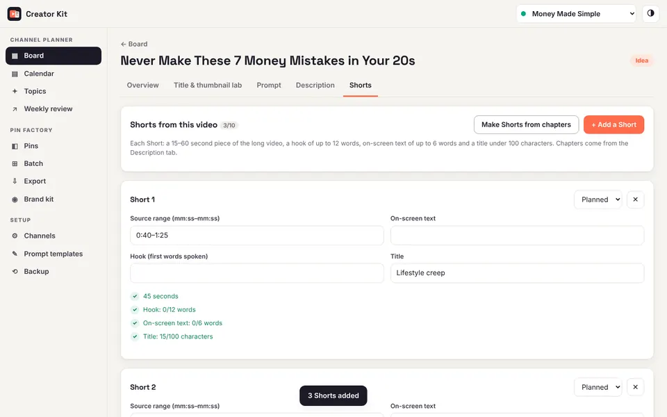
- The board
- Title & thumbnail lab
- Prompt builder
- Shorts planner
Pin Factory
- 8 pin templates at Pinterest's 2:3 size (1000 × 1500): Bold Headline, Numbered List, Quick Tip, Recipe/Product Card, Quote, Before → After, Money Compare and Checklist.
- Brand kit per channel: colors, 6 included fonts, your logo or photo, your website and a call-to-action tag.
- Batch mode: paste rows from Google Sheets or Excel (or upload a CSV) and render every pin at once. Click any pin to fix it.
- Export: all images in one ZIP plus a Pinterest bulk-upload CSV with your image links, UTM-tagged links, a posting schedule and length checks.
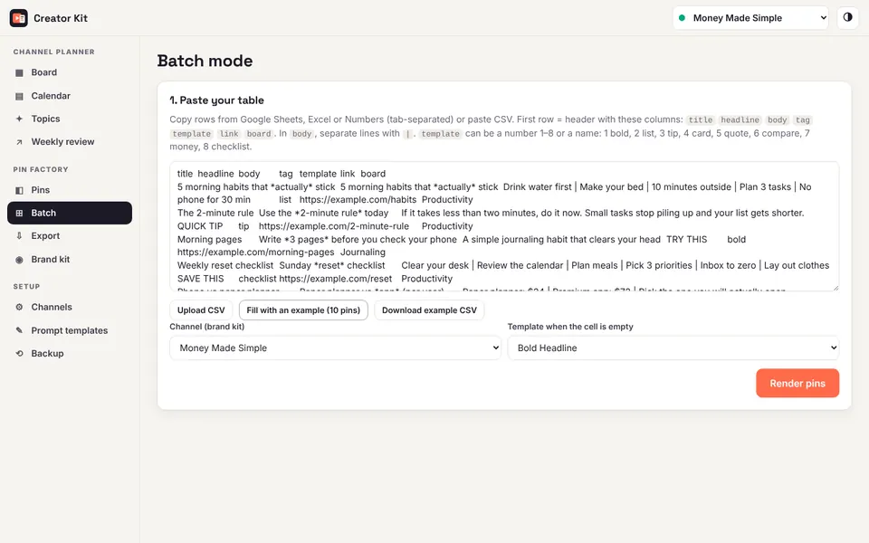
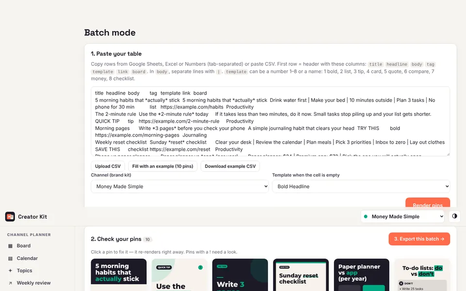
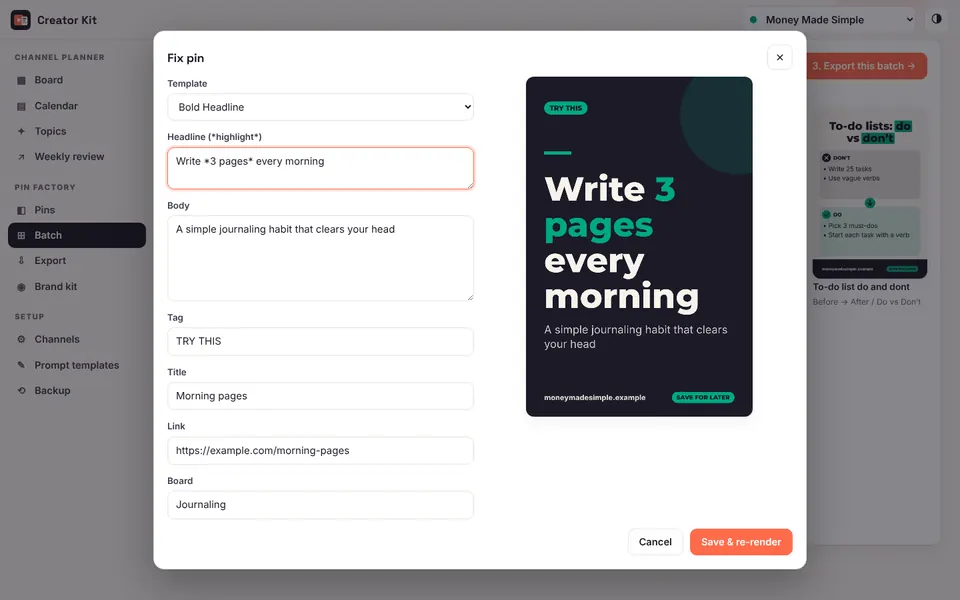
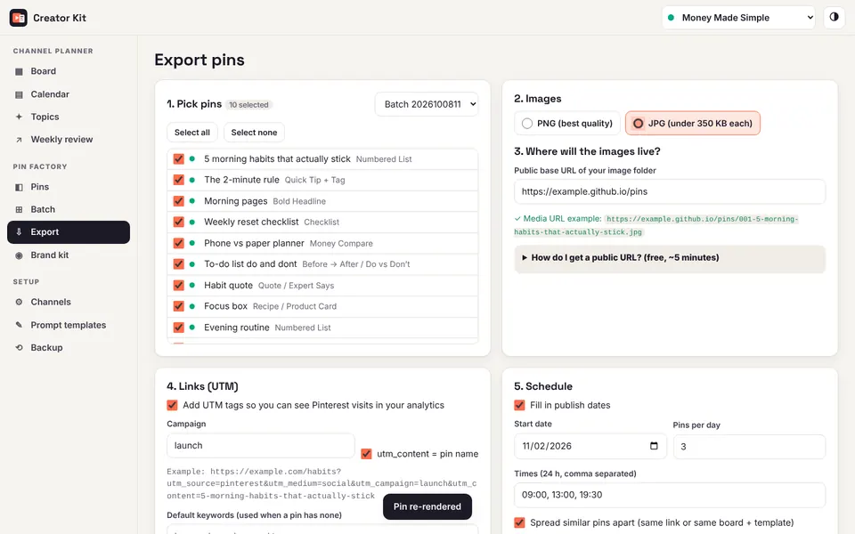
- Paste rows from your spreadsheet
- Every pin renders at once
- Click a pin to fix it
- Export a ZIP and the Pinterest CSV
How it works
Set up your channel
Name, niche, colors, the products you link to and your keywords. A demo channel shows every feature filled in.
Plan each video
Move it across the board, pick the best title, build the script prompt and the description, and plan the Shorts.
Promote it on Pinterest
Paste your pin ideas, render them in your brand, export the images and the CSV, and upload it in your Pinterest account.
A closer look
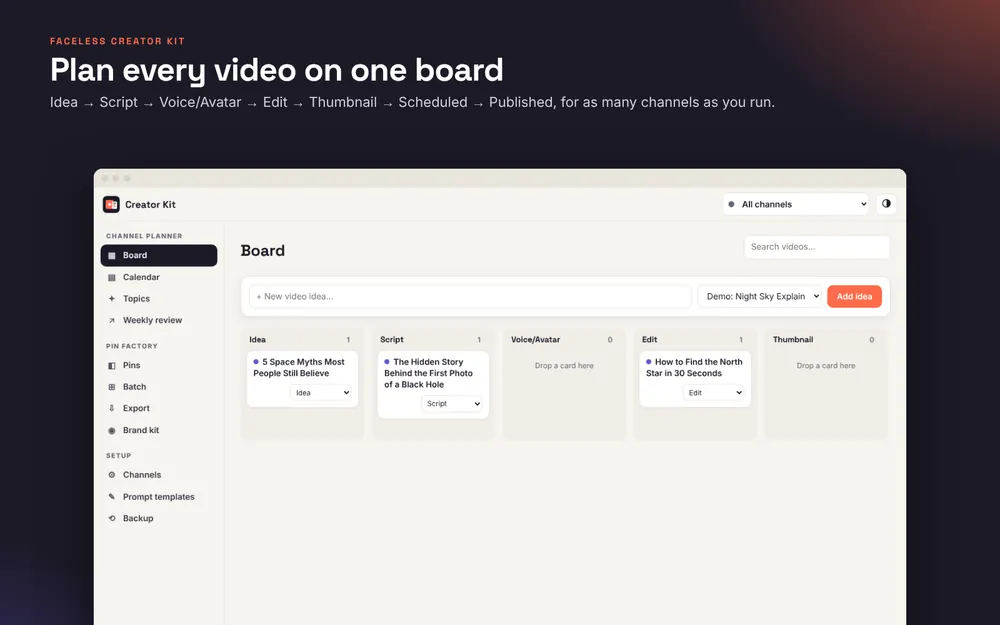
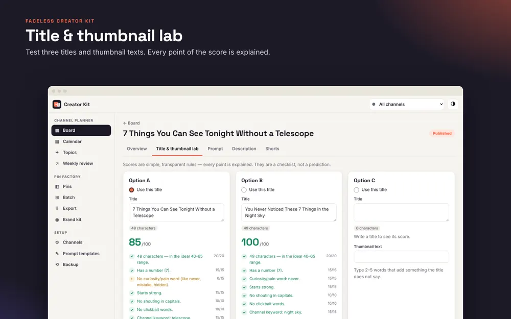
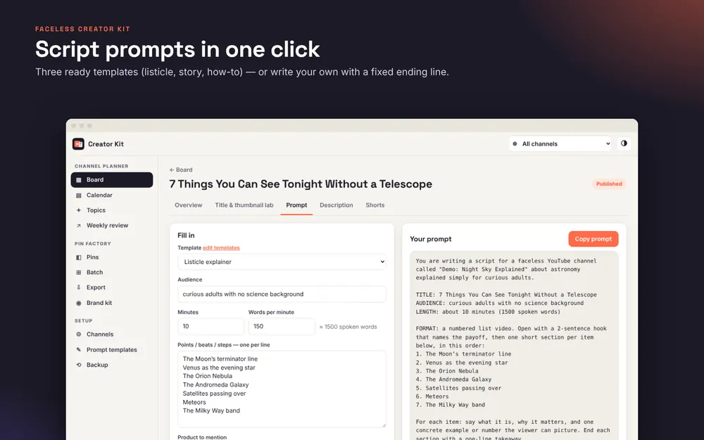
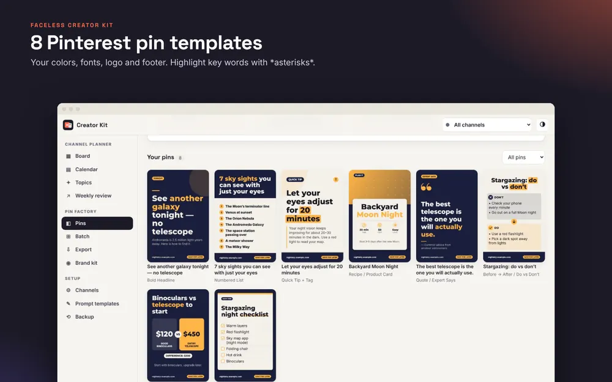
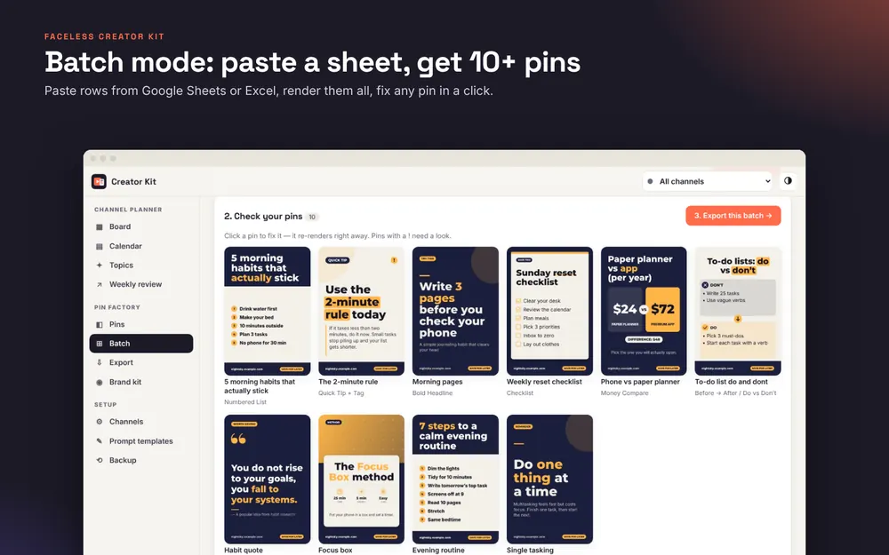
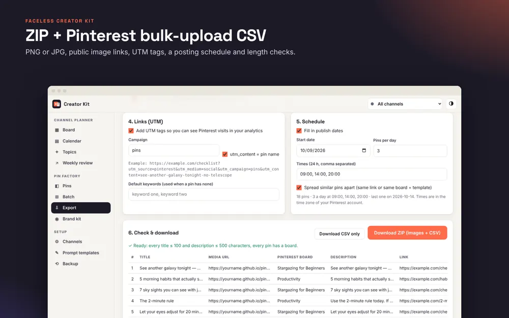
What you get
- Lifetime access to the web app (Channel Planner + Pin Factory)
- A PDF quick-start guide with your personal access code
- A demo channel so you can see every feature filled in
- Future updates to the app at the same address
Requirements
- A recent Chrome, Edge, Safari or Firefox on a computer, tablet or phone.
- Works offline after the first visit; can be installed like an app.
- No account, no cloud. Use the built-in backup to keep a copy or move devices.
- For Pinterest bulk upload: a free place to host images, such as GitHub Pages (instructions included).
Who it's for
- Creators running one or several faceless or AI-avatar YouTube channels.
- People who use Pinterest (or want to) to send viewers to their videos and products.
- Anyone who'd rather not pay for several subscriptions to plan and promote.
Who it's not for
- You want software that makes the videos, voices or avatars. This kit plans; it doesn't produce footage.
- You want something that posts to Pinterest automatically. You upload the CSV yourself.
- You need a team workspace synced in the cloud. Data lives on one device at a time.
- You're looking for a promise of views or income. Nobody honest can make one.
A note from the maker
The kit started as a tool for a simple problem: planning faceless videos in one place and promoting them on Pinterest without design software or a stack of subscriptions. It's a small, independent product. It does a few jobs carefully, it keeps your data on your device, and it tells you plainly what it doesn't do.
If something is unclear before you buy, try the free tools first — the title scorer uses the same rules as the app.
FAQ
Is this a subscription?
No. One payment, and you keep access to the app.
Do I need to install anything?
No. It opens in your browser. You can optionally install it like an app from the browser so it has its own window and icon.
Where is my data stored? Can you see it?
Only in your own browser, on your own device. Nothing is sent to us or anyone else. That also means you should download a backup now and then (one click).
Can I use it on my phone and my computer?
Yes. Each device keeps its own data; move it with Backup → Restore.
Does it work for more than one channel?
Yes, add as many channels as you like, each with its own products, keywords and pin branding.
Which AI tool do the prompts work with?
Any chat-style AI tool you already use for scripts. The kit builds the prompt; you paste it where you like.
Does it make videos, voices or avatars?
No. It is a planning and production tool. It does not create videos, voices or avatars, and it does not post anything for you.
Does it post to Pinterest for me?
No. It makes the pin images and the CSV file that Pinterest's own bulk upload accepts. You upload the CSV in your Pinterest account. You need a free place to host the images, for example GitHub Pages — step-by-step instructions are included.
Can I use the pins commercially?
Yes. The pins you make are yours. The included fonts are open-source (SIL Open Font License).
Will it get me more views or sales?
It can't promise that. Results depend on your content, niche and consistency. The kit saves you time on planning and promotion; the videos are still yours to make.
How do I get access after buying?
Payhip delivers a PDF quick-start guide with your personal access code. Open the app address in the guide, type the code once per browser, and you're in.
I lost my access code.
Contact the seller through the Payhip store with your order details.
Faceless Creator Kit
$29one-time
- Channel Planner + Pin Factory
- 8 pin templates, batch mode, ZIP + CSV export
- Quick-start PDF and demo channel
- Future updates at the same address
- No subscription, no account
Checkout on Payhip. You get the quick-start PDF with your access code.